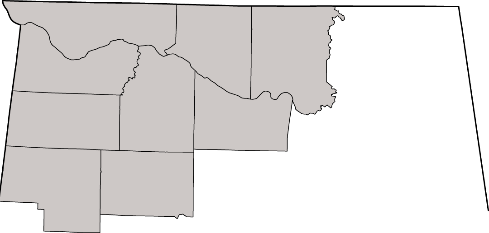

Valley Roofing Professionals, Inc.
Building Trust One Roof At A Time.
Our vision is to e pluribus unum et cetera doloris unum laisses frere to be or not.

Storm Damage
New Roof Installs
Roof Replacement
Insurance Claim Management
Shingle Selection